大正新脩大藏經 第85冊
No.2904 七千佛神符經 (1卷)
【】
第 1 卷
No. 2904
佛說七千佛神符經
人身延年益算。年一百二十歲。甲辰□□□□益算。七千佛守護人身。令不見惡□□□□救我益算。七千佛為護人身斷諸□□□□甲子。從佛益算人身命盡之者。□□□□千佛下生與我益算。七千佛救護人□□□之者。益其食算七百七十佛下生。與我益算。七百七十佛下生身。疾病之者菩薩破魔。三十五佛下生。與我益算。七百七十佛守護人身。令得堅強勇猛精進五十三佛下生。與我益算。七百七十護人身命億千萬歲常得佛道。六佛下生。與我益算。七百七十佛護人益身命。開智慧憑通達無礙。七佛下生與我益算。三十五佛護導人身。威儀無缺。眾魔自畏。八萬眾菩薩與我益算。七十三佛願佛及諸菩薩並聲聞求辟支佛。是諸阿羅漢為弟子益算。七千佛符打鍛眾魔蠱道山林社稷郎岸北神盡自消滅。千佛符打鍛眾魔風王竈君水龍之神土公盡自消滅。千佛符打鍛五秏六噓惡夢悲啼野道呪咀盡自消滅。破軍星主秏虛。武曲星主官事。廉貞星主口舌。文曲星主惡夢。祿存星主百鬼。巨門星注非尸。貪狼星主惡氣。在北斗星注生命。在北斗星注百鬼。三台星主護身命。第一怨星第二良星。第三辟星第。四熒惑星。第五危星能消災受難。辟除天下疫氣疾病。姦非魍魎訪。亂鬼皆去千萬里之外。急急如律令。
第一心開符。第二益算符。第三救護身命符。第四金木水火土不相刻符。第五注生人阿姬死鬼秏噓神符。所生之注一切惡物見符。散滅急急如律令。
將軍在子。六月壬子朔二十日癸丑開白。千佛神符保請百年。若月衰日衰。若歲衰時衰。日忌當佩符之後無有衰忌。千佛符厭令其人過災度難延年益算。受符以後壽命延長。七千佛神符請命。願受一百二十歲。得算備足符。生之身。佩符之後。諸佛生我。諸經載我。光明照我。陰陽長我。四時養我。五大將我。五雲蓋我。菩薩護我。六百甲子覆我。五帝助我。五音樂我。五兵衛我。星辰格我。五絲依我。五香薰我。金床臥我。錦被覆我。仙人扶我。玉女侍我。青龍引我。白虎狹我。守公候使人受我。五姓敬我。萬姓榮我。長者順我。鄉里媚我。弓箭刀兵盜賊離我。虎狼蚖蛇避我。五毒蠱道避我之身。佩符之後天開四通。百鬼不從。墮水不沒。刀兵不傷。出入吉良。不逢禍殃。四方五岳將軍所護。無道備具。保宣在前。賢懷敬我。良藥與我。神符護我。百鬼避我。百神愛我。天門開我。地戶出我。涼泉飲我。風霜雨師除道。當符前者死。逆符者亡。符厭死喪新舊注雌雄破殃伏連之鬼。符厭山林社稷之鬼。符厭遊天之鬼。符厭赤舌之鬼。符厭比舍五土注之鬼。符厭日遊土氣之鬼。符厭星死之鬼。符厭客死之鬼。符厭兵死獄死之鬼。弟子佩千佛符之後。四出行來。千道無窮。萬道無難。臥不惡夢。所求常得。所願從心。千佛法正如符。所勅急急如律令。
第一心開 符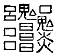第二益算符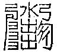第三救護身命符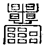第四金木水土不相刻符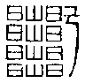第五注生人阿姬死鬼秏虛神符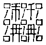符厭死喪新舊注雌雄破伏連之鬼三世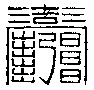符厭遊天之之鬼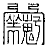符厭赤舌之鬼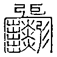符厭比舍五土之鬼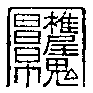符厭日遊土氣之鬼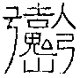符厭星死之鬼符厭客死之鬼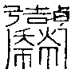符厭兵死獄死之之鬼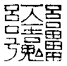符厭界祥女祥之鬼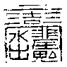符厭無辜之鬼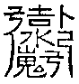。
佛說七千佛神符經